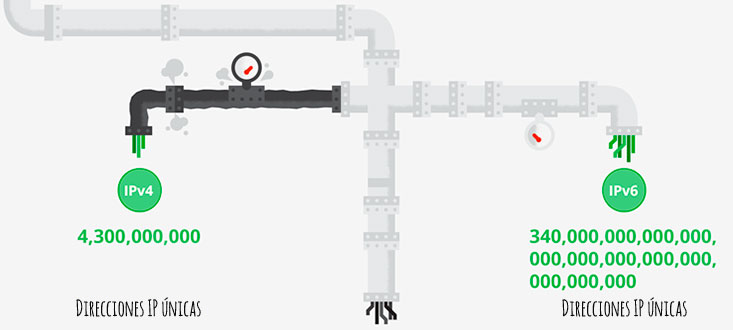
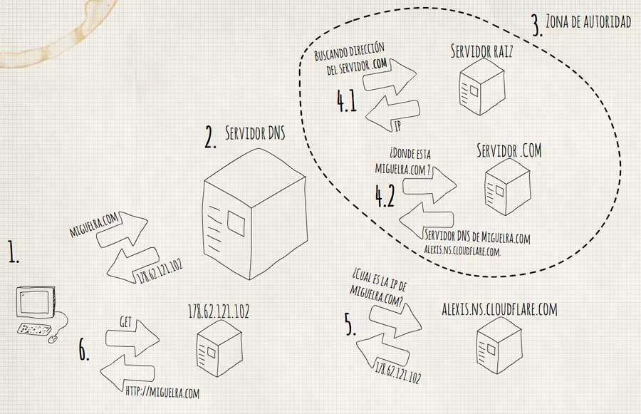
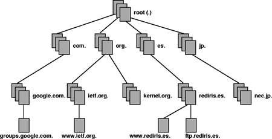

Antes de explicar como funciona una petición de una web, tenemos que entender lo que es internet.
Internet es una gran red, que conecta todos las redes locales de dispositivos a través de los proveedores de servicio, llamados ISP “Internet Service Provider”, que son los encargados de entregar los datos a su destinatario, a través de los puntos neutros que conecta a todos los proveedores.
En estos puntos neutros es donde se valora y selecciona el camino más rápido para llegar nuestro destino.
¿Cómo se entienden todos los dispositivos?
Para que todos los dispositivos se entiendan entre ellos existe un protocolo llamado “Internet Protocol”, más conocido como IP, que asigna a cada dispositivo una dirección con la cual poder identificar a los interlocutores.
La dirección se asigna cuando el dispositivo se conecta a la red, si se desconecta de la red y se vuelve a conectar mas adelante se le vuelve a asignar una IP única. (En algunos casos la IP puede ser la misma, si tienes contratado el servicio con proveedor de internet).
El protocolo que más se usa es el IPv4, que es un conjunto de cuatro números que van desde el 0 al 255, separados por puntos. Como no se esperaba tal crecimiento de usuarios en poco tiempo se agotaron las 232 direcciones posibles, por ello poco a poco se está migrando al nuevo protocolo IPv6, con el que se consiguen 2128 direcciones posibles. Actualmente el uso de IPv6 es del 10%, un 0.04% en España, siendo uno de los países desarrollados que va a la cola de la tecnología.

Imagen de redeszone.net, Ir a la noticia
¡PERO COMO VAMOS A RECORDAR TODAS LAS IPS!
Tranquilos :P, tenemos la solución, el Sistema de Nombres de Dominios, normalmente llamado DNS, nos permite saber acceder a la máquina en la que está el dominio al que queremos acceder, sin saber la IP.
¿Cómo funciona el sistema de DNS?
- Escribimos la dirección en nuestro navegador miguelra.com
- Se realiza una petición al servidor de DNS que se ha establecido manualmente o configurado automáticamente a través del DHCP (Normalmente establecido por el proveedor del servicio)
- Este servidor DNS, tiene que ir a preguntar al encargado de la zona de autoridad
- La zona de autoridad, buscan en la tabla, que almacena los nombres de dominio y su ip asociada.
- Primero va al servidor raíz y pregunta cual es el servidor .com en este caso
- Una vez sabe cual es va al .com y le pregunta. *¿Cual es el servidor DNS de miguelra.com? *
- Cuando el servidor DNS ya sabe cual es, le manda una petición a alexis.ns.cloudflare.com para saber donde está miguelra.com, este le contestará con la ip del servidor, diciendo que está en 178.62.121.102
- Por ultimo se devuelve la ip al cliente y se empiezan a intercambiar paquetes necesarios para procesar la web.

Las zonas de autoridad son servidores que se encargan de resolver un conjunto de dominios (.com, .org, etc), en lo más alto de las zonas de autoridad están los 13 servidores raíz que son los que responden cuando se busca resolver un dominio de primer y segundo nivel.
Haciendo uso del programilla “nslookup“, podemos ver cuales son exactamente cuales son los servidores raíz, pasándole como parámetro el tipo de registro que queremos ver, en este caso -type=ns servidores de nombre y un . para indicarle que queremos ver los servidores raíz.
nslookup -type=ns .
Server: 8.8.8.8
Address: 8.8.8.8#53
Non-authoritative answer:
. nameserver = m.root-servers.net.
. nameserver = g.root-servers.net.
. nameserver = h.root-servers.net.
. nameserver = l.root-servers.net.
. nameserver = b.root-servers.net.
. nameserver = e.root-servers.net.
. nameserver = a.root-servers.net.
. nameserver = i.root-servers.net.
. nameserver = f.root-servers.net.
. nameserver = j.root-servers.net.
. nameserver = k.root-servers.net.
. nameserver = d.root-servers.net.
. nameserver = c.root-servers.net.
Podríamos seguir realizando las comprobaciones de todo el proceso:
- Seleccionamos un servidor raíz y obtenemos la ip 192.36.148.17
- Le preguntamos donde está el com nslookup -type=ns com 192.36.148.17
- Y lo mismo para miguelra.com en este caso nslookup -type=ns miguelra.com 192.5.6.30
Pero si realmente queremos ver cual es todo el proceso que sigue podemos usar dig, que es otra herramienta para consultar servidores de nombre, podemos usar la opción +trace
dig miguelra.com +trace
; <<>> DiG 9.8.3-P1 <<>> miguelra.com +trace
;; global options: +cmd
. 320327 IN NS f.root-servers.net.
. 320327 IN NS j.root-servers.net.
. 320327 IN NS k.root-servers.net.
. 320327 IN NS d.root-servers.net.
. 320327 IN NS c.root-servers.net.
. 320327 IN NS m.root-servers.net.
. 320327 IN NS g.root-servers.net.
. 320327 IN NS h.root-servers.net.
. 320327 IN NS l.root-servers.net.
. 320327 IN NS b.root-servers.net.
. 320327 IN NS e.root-servers.net.
. 320327 IN NS a.root-servers.net.
. 320327 IN NS i.root-servers.net.
;; Received 508 bytes from 213.60.205.175#53(213.60.205.175) in 161 ms
com. 172800 IN NS a.gtld-servers.net.
com. 172800 IN NS b.gtld-servers.net.
com. 172800 IN NS c.gtld-servers.net.
com. 172800 IN NS d.gtld-servers.net.
com. 172800 IN NS e.gtld-servers.net.
com. 172800 IN NS f.gtld-servers.net.
com. 172800 IN NS g.gtld-servers.net.
com. 172800 IN NS h.gtld-servers.net.
com. 172800 IN NS i.gtld-servers.net.
com. 172800 IN NS j.gtld-servers.net.
com. 172800 IN NS k.gtld-servers.net.
com. 172800 IN NS l.gtld-servers.net.
com. 172800 IN NS m.gtld-servers.net.
;; Received 490 bytes from 198.97.190.53#53(198.97.190.53) in 523 ms
miguelra.com. 172800 IN NS bella.ns.cloudflare.com.
miguelra.com. 172800 IN NS alexis.ns.cloudflare.com.
;; Received 173 bytes from 192.54.112.30#53(192.54.112.30) in 138 ms
miguelra.com. 300 IN A 178.62.121.102
;; Received 46 bytes from 173.245.58.74#53(173.245.58.74) in 82 mss
Puede que parezca un proceso complejo y costoso, pero no lo es en realidad, es un proceso muy rápido que se resuelve en cuestión de microsegundos. Y en muchas ocasiones las peticiones no se realizan, ya que los servidores tienen una memoria caché que almacena las peticiones para poder responder más rápido y no saturar la red.

En esta imagen se representa la estructura en árbol de los servidores. Puede que parezca que solo hay un servidor ra√≠z pero no es as√≠, como dije antes hay 13 servidores ra√≠z y además están clonados a lo largo de la red, por lo que no hay peligro de quedarnos sin internet.¬†üôÇ
*¿Y ahora que? *
Cuando accedemos a una web lo hacemos a través del protocolo HTTP “Hyper-Text Transfer Protocol” o HTTPS que usa un cifrado TLS “Transport Layer Security” para proteger la comunicación.
Vale … *¿Qué es un protocolo? *Un Protocolo es un convenio acerca del formato y la comunicación de los datos, que se ha de usar.
Esta es una lista de los protocolos más usados con sus respectivos puertos por defecto asignados por la IANA “Internet Assigned Names Authority”:
FTP:20 o 21 – Transferencia de ficherosSSH:22 – Secure shell remote accessTelnet:23 – Acceso remoto inseguroSMTP:25 – Envío de correo electrónicoDNS:53  – Resuelve nombre de dominioHTTP:80 – Navegación web y proxysPOP3:110 – Recibo de correo electrónicoIMAP: 143 – Recibo y envío de correo electrónicoHTTPS:443 – Conexiones segurasIMAP:993 – SeguroPOP3:995 – SeguroSOCKS: 1080 – ProxyOpenVPN: 1194 – Red privada virtualSquid:3128 – ProxyHTTP:8080 – Estándar de proxys
Entendemos como puertos * un canal de comunicación, es lo mismo que los puertos físicos (Ejemplo: Puerto USB), se usa para *distinguir entre las múltiples aplicaciones que se pueden conectar al mismo dispositivo.
Ahora que tenemos todo claro ya podemos ver como funciona el protocolo HTTP, pulsa aquí para ir al artículo.